Now that I had a plan for my stencils, I needed to buy the mdf boards that I would laser cut, and then spend days and days in The Creator Space, using the laser cutters in 30 minute increments, and annoying all of the stressed engineering students around me. I bought five sheets of 900mmx600mmx3mm mdf from Bunnings, and began printing. My first sheet of cutting out took around 3 hours to cut - meaning that I had to split it up into six sections. This was super laborious and took basically an entire week, so I knew I could not do this five times. I decided that for each of the rest of my panels, I would do something different. On one I blew up the text to decrease the amount of linework, on another I only cut out a single section of text. On one, I didn't cut out anything at all.
The second challenge that I faced was attempting to keep the loose, cut out letters in place. My technique for this was: I laid two pieces of mdf into the laser cutter, only cutting through the top one. This meant all of the loose letters would stay in place when I removed both of the sheets from the cutter. I placed these onto a flat surface, then gently lifted of the top, cut out stencil, leaving the loose letters in their position on the bottom mdf board. Then, I placed a sheet of clear sticky contact over the letters to secure them. I flipped the whole board, letters and contact over, and then removed the mdf board. I placed another piece of clear sticky contact over the other side of the letters, and voila! Of course this was a highly imperfect process that dropped lots of letters and other pieces which I then collected up in a box. But this is the process of 'copying' that I am undertaking! Each layer of manipulation, including the physical process of laser cutting out the stencils, introduces new quirks and meaning to the 'original' piece/story.
The last thing that I laser cut was just a little bit of fun. I was thinking of Narelle's work with the art collective DAMP that she shared with us in her lecture, and the giant pencil that was wielded by a whole group of people. This was on my mind when I was deciding how to make myself more of a character, more of a hero, in my photoshop of the garment/garments. It was then Willow who suggested a giant sewing needle - my secret weapon! I cut out two needles, one from mdf, and one from clear acrylic, and I really love how the acrylic one came out! It's so funny to me and I love swinging it around.
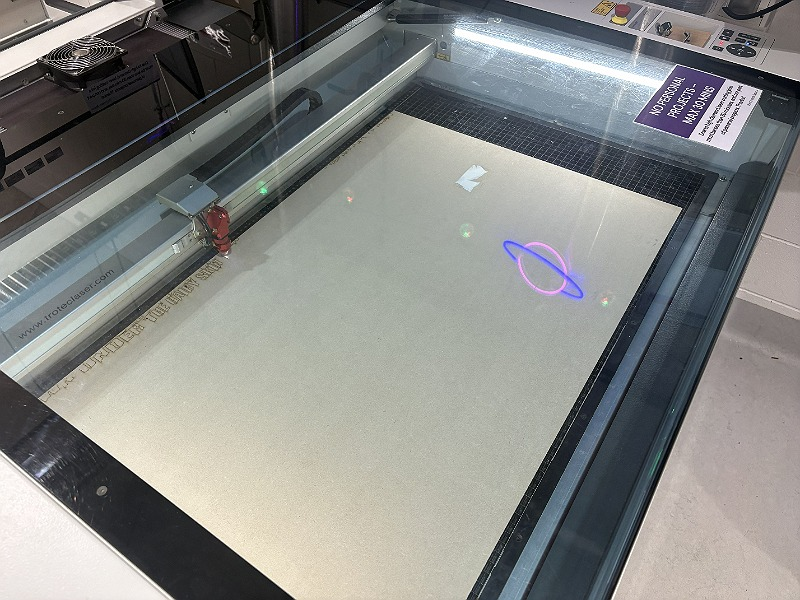
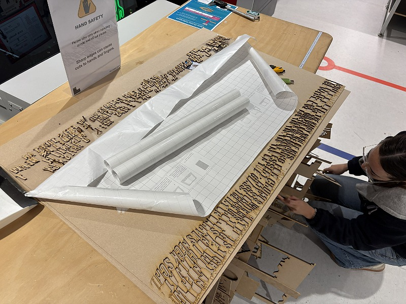
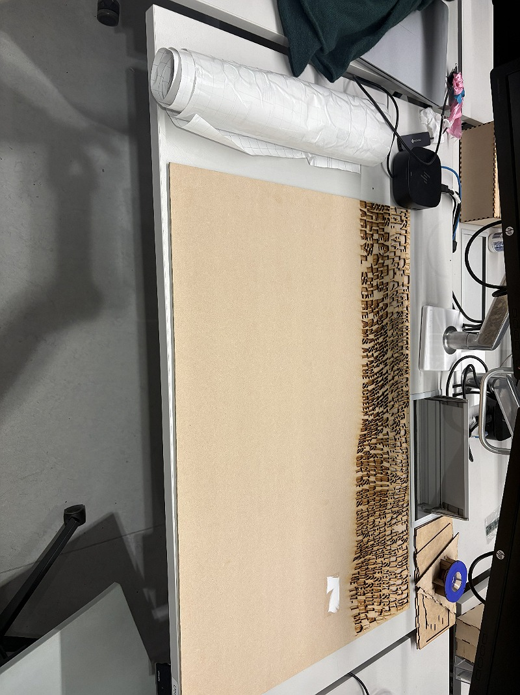
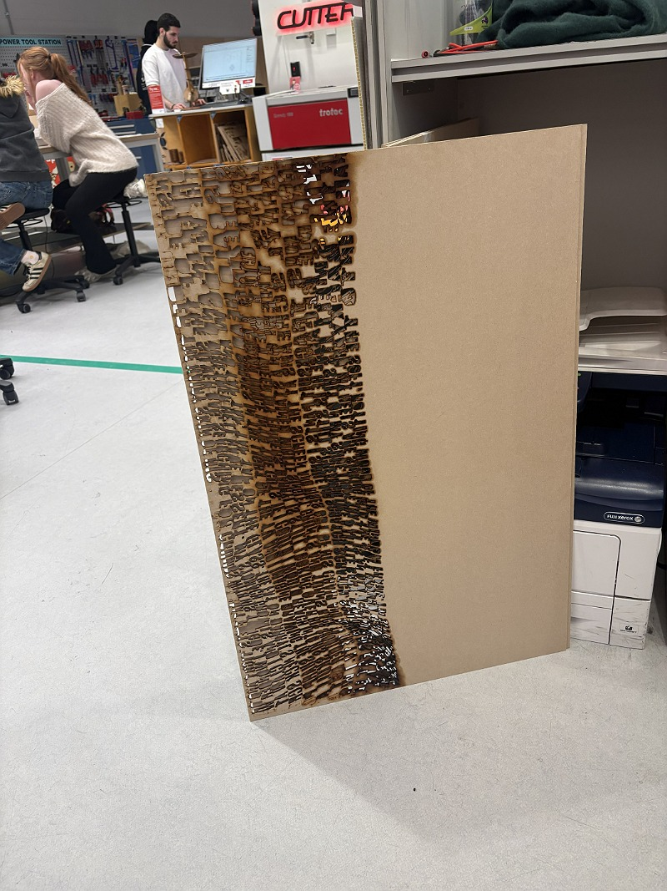
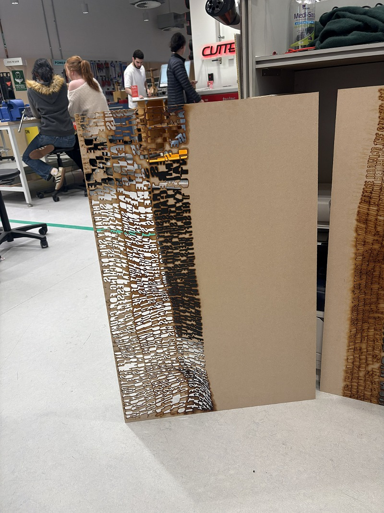
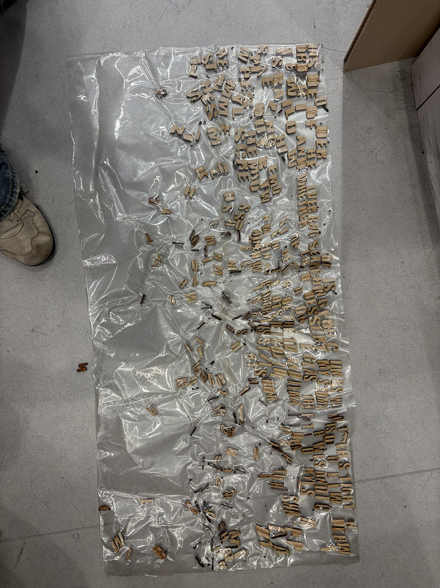
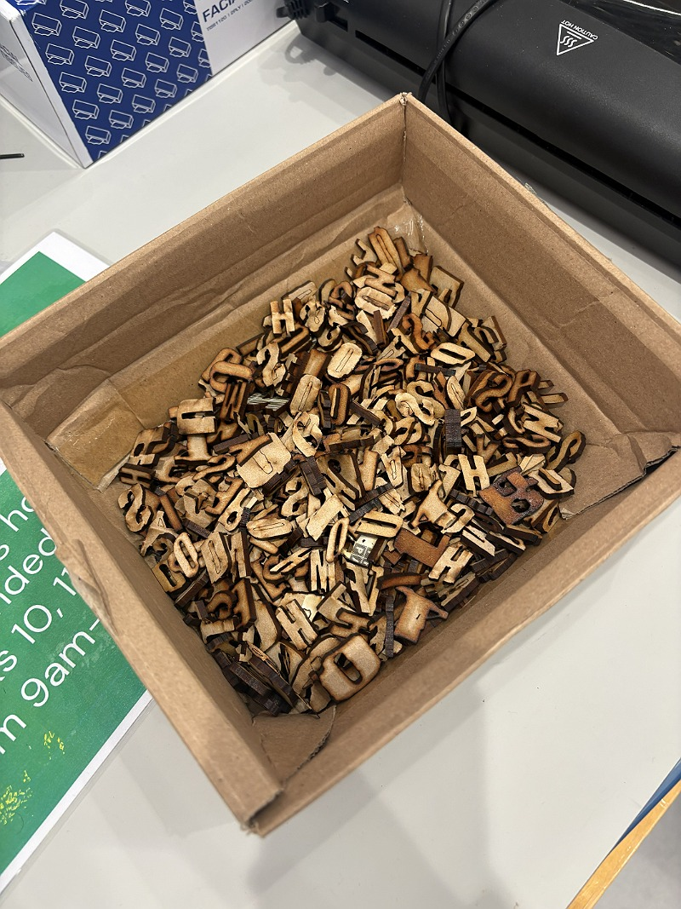
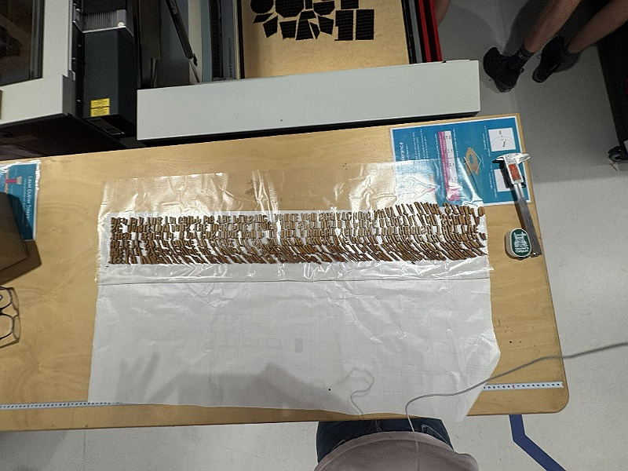
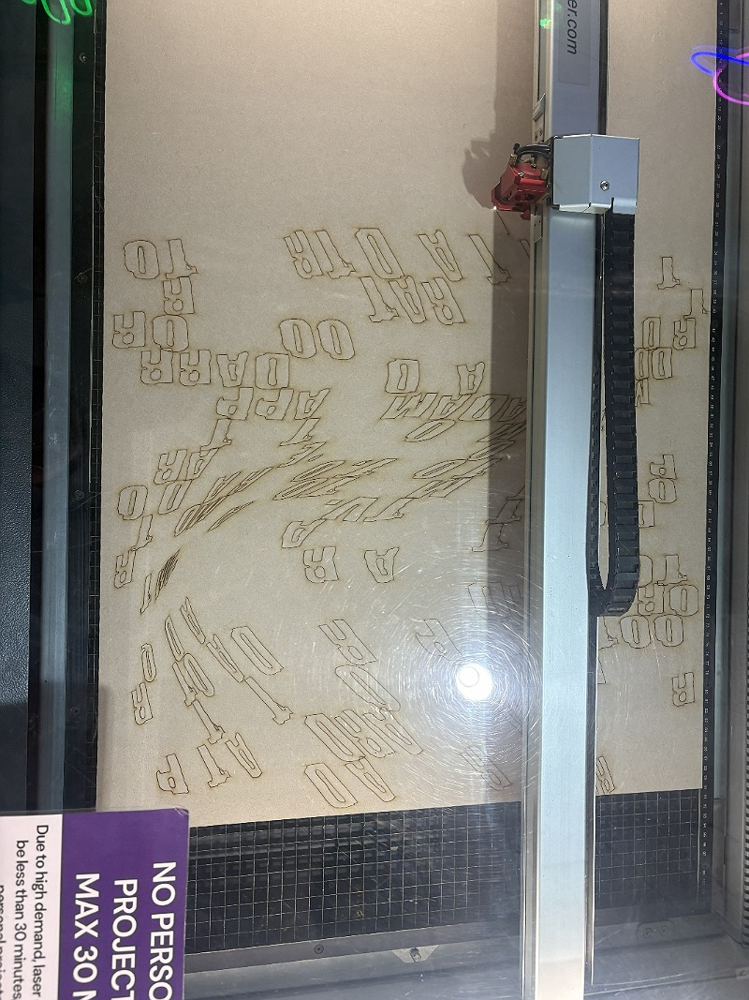
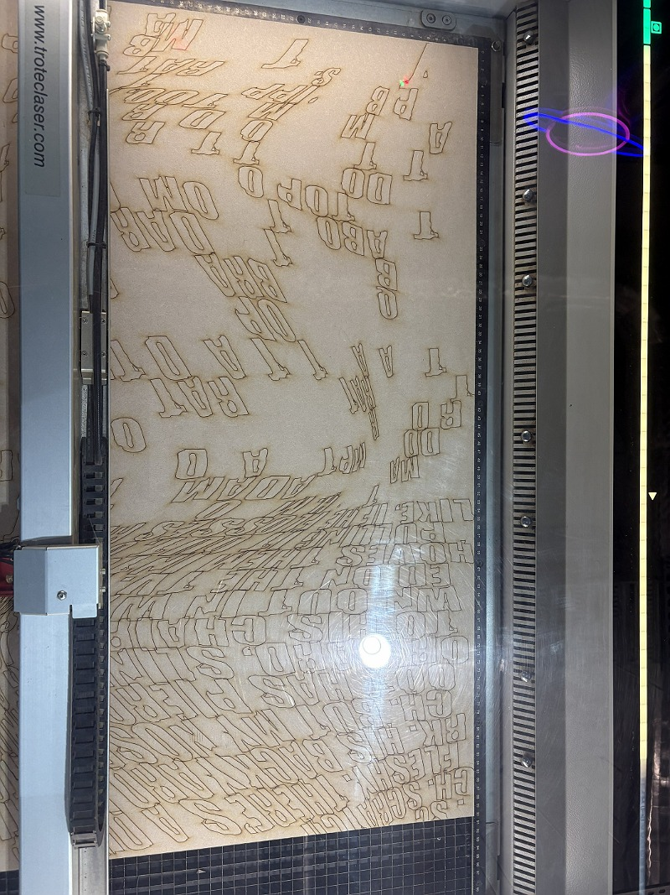
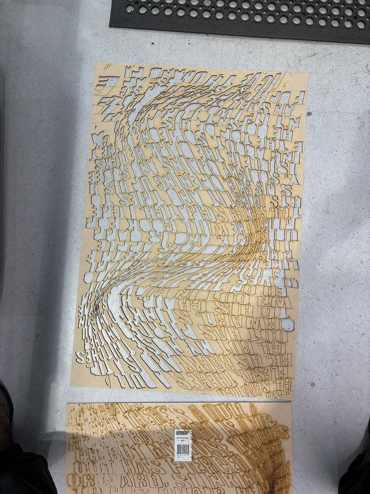
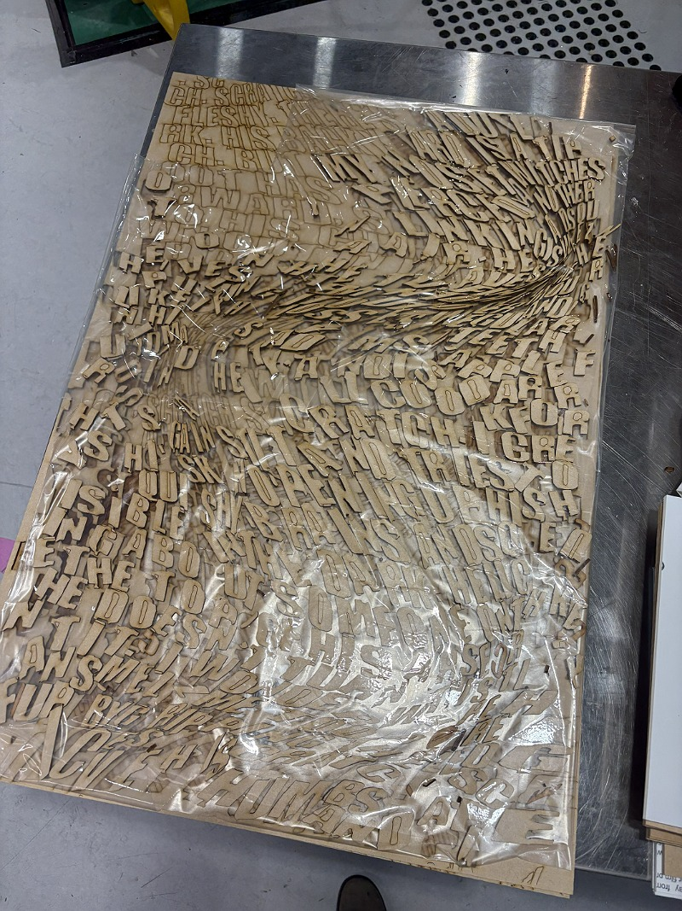
make space!